Greatsword
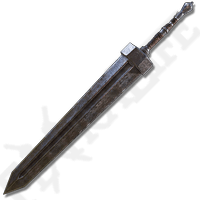
The Greatsword in Elden Ring is a massive, heavy weapon, dealing devastating damage with wide swings. When paired with the Lion’s Claw Ash of War, it becomes even more powerful, allowing for a fierce, leaping attack that crushes enemies with overwhelming force.
Grafted Blade Greatsword
The Grafted Blade Greatsword is a colossal sword forged from countless smaller blades, symbolizing power through conquest. This heavy weapon excels in raw damage and scales well with Strength. Its unique Oath of Vengeance Ash of War temporarily boosts all stats, increasing attack power and defense, making you a juggernaut in battle.
Prelate's Inferno Crozier
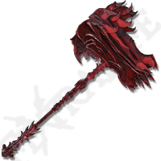
The Prelate's Inferno Crozier is a colossal, flame-scorched hammer, delivering devastating fiery blows. Its Prelate’s Charge Ash of War lets you charge forward, hammer ablaze, crushing everything in your path with fiery destruction.
Greatsword Of Solitude
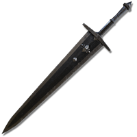
The Greatsword of Solitude is a massive, somber blade, dealing heavy, slow strikes. Its Silent Resolve Ash of War surrounds the wielder in a calming aura, briefly boosting poise and reducing incoming damage, allowing for steadfast attacks amidst overwhelming odds.
Rusted Anchor
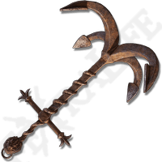
The Rusted Anchor is a heavy weapon, delivering powerful, sweeping strikes. Its Anchor’s Grip Ash of War slams the weapon into the ground, creating a shockwave that disrupts and damages nearby enemies.
Uchigatana
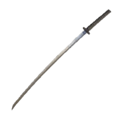
The Uchigatana is a sleek katana, known for its quick strikes and impressive bleed buildup. Its Unsheathe Ash of War allows for a swift, devastating draw attack that catches foes off guard, making it a deadly choice for agile combatants seeking precision and speed.
Nagakiba
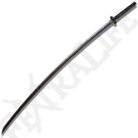
The Nagakiba is a long, elegant katana with extended reach. Its design enhances quick, sweeping attacks and bleed buildup. Equipped with the Unsheathe Ash of War, it allows for a swift, devastating draw attack that strikes with deadly precision, making it a formidable choice in battle.
The Dancing Blade of Ranah
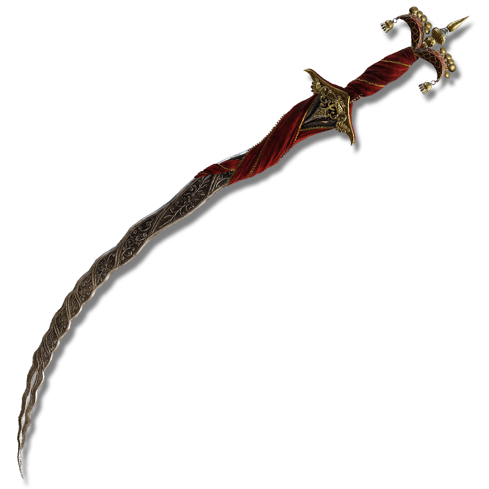
The Dancing Blade of Ranah is an elegant sword, delivering fluid, graceful attacks. Its Moonlit Dance Ash of War unleashes rapid slashes followed by a powerful thrust, making it a mesmerizing weapon that combines beauty and deadly precision.
Hand of Malenia
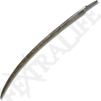
The Hand of Malenia is a graceful, curved blade designed for swift, precise attacks. Its unique aesthetic reflects the elegance of its namesake. Its Waterfoul Ash of War allows for a powerful, rapid flurry of strikes, making it a lethal choice that embodies speed and finesse in combat.
Rivers of Blood
The Rivers of Blood is a deadly katana, known for its exceptional bleed buildup. Its striking design complements its swift, lethal attacks. The Corpse Piler Ash of War unleashes a series of slashes that send out a wave of blood, devastating enemies and making it a formidable choice in both PvE and PvP.
Dark Moon Greatsword
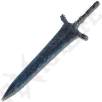
The Dark Moon Greatsword is a powerful, elegant weapon, known for its magical prowess. Its unique design reflects the moon's beauty and strength. The Moonlight Greatsword Ash of War allows for a charged magical attack that releases a wave of moonlight, dealing significant damage and enhancing the sword's mystical allure in battle.
Fallingstar Beast Jaw
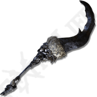
The Fallingstar Beast Jaw is a massive, monstrous weapon crafted from the jaw of a fallen Star Beast. Its brutal design delivers heavy, crushing strikes. The Beast Roar Ash of War unleashes a powerful roar that boosts damage and enhances the wielder's attacks, embodying the ferocity of the beast it came from.
Azur's Glintstone staff
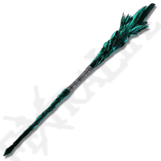
Azur's Glintstone Staff is a powerful catalyst, known for its high sorcery scaling. Its elegant design channels the magic of the stars. The Glintstone Sorcery Ash of War enhances sorcery spells cast with the staff, boosting their potency and allowing for devastating magical attacks that pierce through foes with glintstone brilliance.
Rotten Crystal Sword
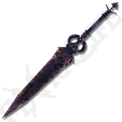
The Rotten Crystal Sword is a unique weapon that combines beauty and decay. Its striking design features crystalline elements that emit a toxic aura. The Crystal Release Ash of War unleashes a powerful thrust that releases a wave of rot, dealing damage over time and inflicting a debilitating status effect on enemies.
Scepter Of The All-Knowing
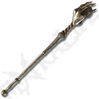
The Scepter of the All-Knowing is a powerful staff, embodying the essence of wisdom and arcane knowledge. Its intricate design allows for enhanced sorcery. The Scepter’s Insight Ash of War boosts the potency of sorcery spells cast with the staff, providing a significant advantage in magical combat and unlocking the secrets of the arcane.
Rivers Of Blood
The Rivers of Blood is a deadly katana, known for its exceptional bleed buildup. Its striking design complements its swift, lethal attacks. The Corpse Piler Ash of War unleashes a series of slashes that send out a wave of blood, devastating enemies and making it a formidable choice in both PvE and PvP. It is so good we are mentioning it twice!!
Serpent Bow
The Serpent Bow is a sleek, elegant bow, known for its rapid-fire capabilities and unique aesthetic. Its design allows for quick, precise shots. The Serpent's Arrow Ash of War imbues arrows with a venomous effect, dealing poison damage over time and making it a lethal choice for ranged combat against unsuspecting foes.
Morgott's Cursed Sword
Morgott's Cursed Sword is a fearsome weapon, characterized by its imposing design and dark lore. This sword deals significant damage with each swing. The Cursed Slash Ash of War allows the wielder to unleash a cursed slash that inflicts damage and applies a unique status effect, making it a formidable choice in both offense and strategy.
Mohgwyn's Sacred Spear
Mohgwyn's Sacred Spear is a powerful weapon, featuring a striking design that reflects its dark heritage. This spear excels in both range and damage output. The Bloodboon Ash of War allows the wielder to unleash a devastating blood attack that inflicts heavy damage and applies bleed buildup, making it a fearsome choice for those who embrace the power of blood in battle.
Bloody Helice
Bloody Helice is a unique weapon, known for its swift, graceful attacks and distinctive design. This spear excels in quick strikes and bleed buildup. The Blood Surge Ash of War enables the wielder to perform a rapid thrust that sends out a wave of blood, inflicting damage and applying bleed status to enemies, making it a lethal option for aggressive combatants.
Blasphemous Blade
Considered the best weapon in the entire game, the Blasphemous Blade is a powerful weapon with a striking design that reflects its dark lore. It delivers heavy damage with each swing. The Taker's Flames Ash of War allows the wielder to unleash a fiery attack that restores health based on damage dealt, making it a formidable choice in both offense and sustainability during combat.
Godslayer's Greatsword
The Godslayer's Greatsword is an imposing weapon that exudes dark elegance. It delivers devastating damage with powerful strikes. The Godslayer's Flame Ash of War unleashes a fiery attack that inflicts both physical and fire damage, making it a fearsome choice for overwhelming enemies in battle.
Winged Scythe
The Winged Scythe is a striking weapon with a unique design that combines elegance and lethality. It delivers sweeping, powerful attacks. The Horde of Scythes Ash of War unleashes a series of slashes that release a wave of spectral scythes, damaging enemies from a distance and making it a formidable option for crowd control in combat.
Maliketh's Black Blade
Maliketh's Black Blade is a formidable weapon that embodies dark elegance and lethal precision. Its powerful strikes deal significant damage. The Black Blade Ash of War allows the wielder to perform a devastating attack that cuts through foes and applies a unique status effect, making it a fearsome choice in any confrontation.
Sacred Relic Sword
The Sacred Relic Sword is a majestic weapon that exudes divine power. It delivers heavy, impactful strikes. The Golden Order Greatsword Ash of War unleashes a powerful wave of light that damages enemies in its path, making it a formidable choice for both offense and area control in battle.